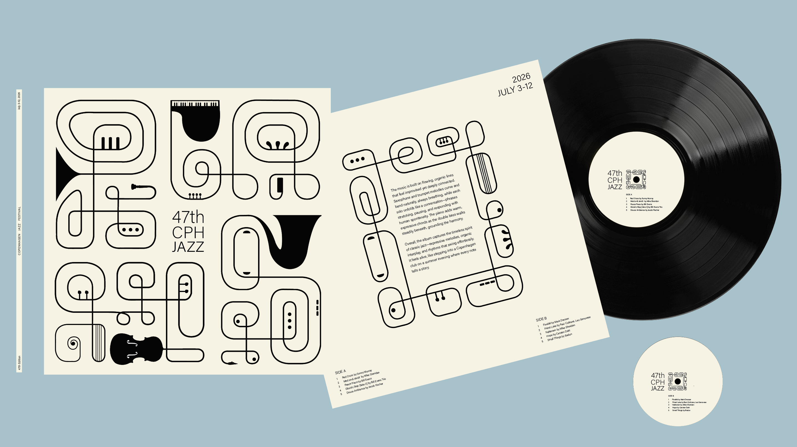
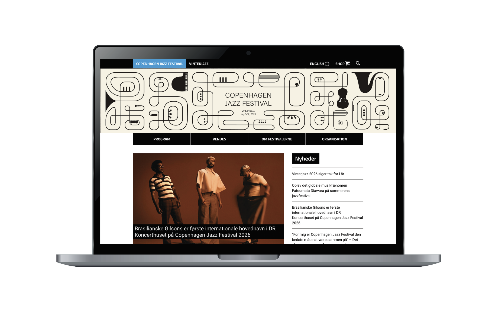
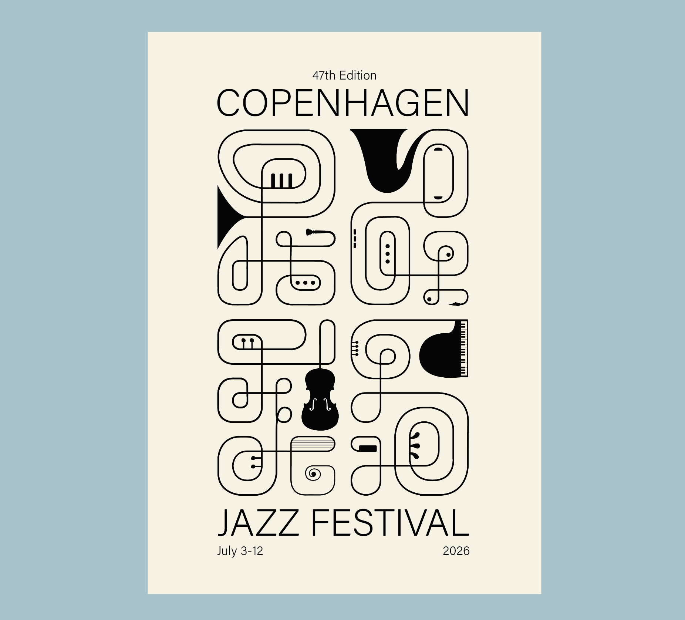
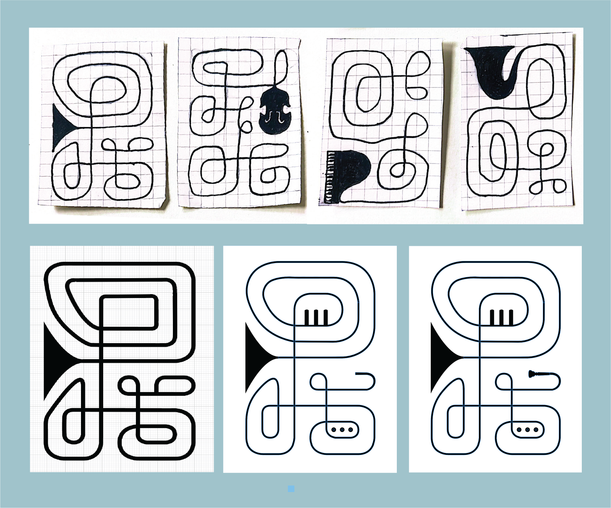

For this project, I explored creating a flexible visual system for the 2026 Copenhagen Jazz Festival. Instead of a single image, I wanted to create a cohesive design adaptable across print and digital formats, translating the spirit of jazz into a contemporary identity for this edition only.
My concept translates the rhythm and mechanics of jazz instruments into graphic forms inspired by buttons, keys, and pegs. These functional details are abstracted into dynamic shapes that express movement and emotion. Simple, clean typography balances the expressive graphics, creating clarity and a cohesive visual system.


